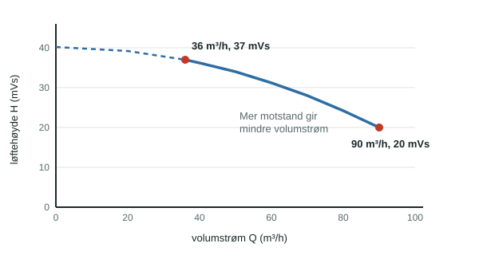

Rør, ventiler og pumper
Rør fører væsken, ventiler styrer den, og pumper gir den energi til å strømme. Her ser du hva de tre gjør i et væskesystem, og hvordan du regner ut hvor mye effekt en pumpe gir til væsken. Alle eksemplene er fra pumperommet på skolen.
Rør: størrelse og trykklasse
På et flytskjema har hvert rør et linjenummer. I pumperommet ser det slik ut: W-12121-40-16. Det kan leses slik:
| Del | Betyr |
|---|---|
| W | hva som går i røret (W for vann) |
| 12121 | nummeret på akkurat denne rørlinjen |
| 40 | rørstørrelsen, DN40 (omtrent 40 mm innvendig) |
| 16 | trykklassen, PN16 |
DN lærte du om på siden Strømning i rør. PN (trykklasse) sier hvor høyt trykk røret, flensene og ventilene er laget for. PN16 betyr at de tåler 16 bar ved vanlig temperatur. Alle delene i en rørlinje må tåle det høyeste trykket som kan oppstå.
Ventiler: åpne, stenge og styre
En ventil endrer hvor lett væsken kommer gjennom røret. Ventiler har ulike oppgaver:
| Ventil | Hva den gjør | I pumperommet |
|---|---|---|
| stengeventil | Er enten helt åpen eller helt stengt. Brukes til å stenge av en del av anlegget. | spjeldventilene foran og etter hver pumpe (se under) |
| reguleringsventil | Kan stå delvis åpen. Styrer hvor mye som strømmer. | LCV-12022 og LCV-12032, som styres av nivåregulatoren |
| tilbakeslagsventil | Slipper væsken bare én vei. Hindrer at væsken renner tilbake når pumpen stopper. | finnes ikke i pumperommet, men er vanlig på trykksiden av pumper i industrien |
En spjeldventil har en rund skive inne i røret som dreies. Står skiva på tvers, er ventilen stengt. Står den på langs, er den åpen. Den kan også stå på skrå og strupe strømmen.
Ventilene foran og etter hver pumpe i pumperommet er spjeldventiler. De brukes som stengeventiler, og den på trykksiden (etter pumpen) kan også strupe strømmen. Den på sugesiden (foran pumpen) skal stå helt åpen når pumpen går.
For fysikken er det viktigste dette: Jo mer en ventil struper, jo større motstand får væsken, og jo mer trykk går tapt. Det handler neste side om, Trykktap. Hvordan ventilene er bygd, lærer du i Enhetsoperasjoner. Hvordan reguleringsventiler styres automatisk, lærer du i Automasjon.
Pumper gir væsken energi
Væske strømmer av seg selv bare nedover, eller fra høyt til lavt trykk. Skal du løfte væsken eller presse den gjennom lange rør, trenger du en pumpe. Pumpen øker trykket i væsken, og slik får væsken energi som den kan bruke til å strømme.
Pumpene i pumperommet er sentrifugalpumper. Et hjul med skovler roterer fort og slynger væsken utover og ut av pumpen. Hvordan pumpen er bygd, lærer du i Enhetsoperasjoner.
| Pumpe | Motor | Volumstrøm | Løftehøyde |
|---|---|---|---|
| Pumpe 1 | 7,5 kW, med frekvensomformer | 36–90 m3/h | 37–20 mVs |
| Pumpe 2 | 2,2 kW | 20 m3/h | 15 mVs |
| Pumpe 3 | 5,5 kW | 80 m3/h | 15 mVs |
Løftehøyden lærte du om på siden Trykk i væsker. 15 mVs betyr at pumpen kan øke trykket med ca. 1,5 bar når den gir 20 m3/h.
Pumpekurven: trykk eller mengde
En sentrifugalpumpe kan ikke gi både høyt trykk og stor volumstrøm samtidig. Er det mye motstand i rørene, eller må vannet løftes høyt, gir pumpen mindre volumstrøm. Dette vises i en pumpekurve. For pumpe 1 står det på skiltet at den gir 90 m3/h ved 20 mVs, men bare 36 m3/h ved 37 mVs.

Pumpe 1 har en frekvensomformer. Den endrer hvor fort motoren går. Går motoren saktere, gir pumpen både mindre trykk og mindre volumstrøm. Slik kan du styre pumpen uten å strupe med en ventil, og det sparer energi.
Pumpeeffekt: hvor mye energi får væsken?
Effekten pumpen gir til væsken, kalles hydraulisk effekt. Den avhenger av hvor mye trykket øker, og hvor mye væske som strømmer:
\[ P = \Delta p \cdot Q \]
- P = hydraulisk effekt (W)
- Δp = trykkøkningen gjennom pumpen (Pa)
- Q = volumstrøm (m3/s)
Pa ganger m3/s blir J/s, altså watt. Hva effekt er, lærte du i Energi, arbeid og effekt.
Oppgave: Pumpe 2 gir 20 m3/h med løftehøyde 15 mVs. Hvor stor effekt får vannet?
- Trykkøkning: \( \Delta p = \rho \cdot g \cdot H = 1000 \cdot 9{,}81 \cdot 15 = 147\,150 \text{ Pa} \)
- Volumstrøm: \( Q = \dfrac{20}{3600} = 0{,}005\,56 \text{ m}^3\text{/s} \)
- Effekt: \( P = \Delta p \cdot Q = 147\,150 \text{ Pa} \cdot 0{,}005\,56 \text{ m}^3\text{/s} \approx 818 \text{ W} \)
Svar: Vannet får ca. 0,82 kW.
Virkningsgrad: hvor blir resten av?
Motoren på pumpe 2 er på 2,2 kW, men vannet får bare ca. 0,82 kW. Noe av energien blir til varme i motoren, i lagrene og i selve pumpen. Motoren er dessuten valgt med litt reserve. Forholdet mellom det du får ut, og det du putter inn, kalles virkningsgrad:
\[ \eta = \frac{P_{\text{ut}}}{P_{\text{inn}}} \]
Skal du finne virkningsgraden nøyaktig, må du måle hvor mye strøm motoren faktisk bruker. Tallet 2,2 kW på skiltet er hva motoren kan levere, ikke hva den bruker hele tiden.
Oppgave: En pumpe bruker 1,5 kW elektrisk effekt. Den gir vannet 0,82 kW. Hva er virkningsgraden?
\( \eta = \dfrac{0{,}82 \text{ kW}}{1{,}5 \text{ kW}} = 0{,}55 = 55\,\% \)
Svar: Virkningsgraden er ca. 55 %. Resten, ca. 0,7 kW, blir til varme.
- Ikke kjør pumpen tørr. Uten væske blir pumpen varm, og tetningene kan bli ødelagt. I pumperommet har hver pumpe en strømningsvakt som stopper pumpen hvis det strømmer for lite inn.
- Ikke kjør pumpen lenge mot stengt ventil. Da går all energien til å varme opp væsken i pumpen.
- Følg driftsprosedyren for start og stopp av pumpene i pumperommet.
- Roterende deler og strøm: Pumpen skal være stoppet, låst og merket før du jobber på den. Se LOTO i HMS.
- Sjekk at alle deler i rørlinjen tåler trykket (PN) før du setter anlegget under trykk.
Test deg selv
Et rør er merket PN16. Hva betyr det?
- Røret er 16 mm innvendig.
- Røret er laget for et trykk på 16 bar.
- Røret har linjenummer 16.
PN er trykklassen. PN16 betyr at røret, flensene og ventilene tåler 16 bar ved vanlig temperatur.
Hvilken ventil hindrer at væsken renner tilbake gjennom pumpen når den stopper?
- stengeventil
- reguleringsventil
- tilbakeslagsventil
En tilbakeslagsventil slipper væsken bare én vei.
En sentrifugalpumpe må løfte vannet høyere enn før. Hva skjer med volumstrømmen?
- Den øker.
- Den minker.
- Den er den samme.
Pumpekurven faller: høyere løftehøyde gir mindre volumstrøm.
En pumpe øker trykket med 200 000 Pa, og volumstrømmen er 0,010 m3/s. Hva er den hydrauliske effekten?
- 20 W
- 2 000 W
- 20 000 000 W
\( P = \Delta p \cdot Q = 200\,000 \cdot 0{,}010 = 2000 \text{ W} = 2{,}0 \text{ kW} \)
En pumpe bruker 4,0 kW strøm og gir vannet 2,8 kW. Hva er virkningsgraden?
- 1,4 %
- 70 %
- 143 %
\( \eta = 2{,}8 / 4{,}0 = 0{,}70 = 70\,\% \). Virkningsgraden kan aldri bli over 100 %.
Ordliste
| Begrep | Forklaring | Engelsk |
|---|---|---|
| linjenummer | Merkingen av en rørlinje på flytskjemaet. Den viser blant annet hva som går i røret, størrelsen og trykklassen. | line number |
| PN | Trykklasse: hvor høyt trykk rør, flenser og ventiler er laget for. PN16 tåler 16 bar. | nominal pressure (PN) |
| stengeventil | Ventil som er helt åpen eller helt stengt. Brukes til å stenge av en del av anlegget. | isolation valve |
| reguleringsventil | En ventil som kan stå delvis åpen. Den åpner og lukker gradvis etter signal fra en regulator, og slik styrer den hvor mye som strømmer. | control valve |
| tilbakeslagsventil | En ventil som slipper væsken bare én vei og stenger av seg selv hvis strømmen snur. | check valve, non-return valve |
| spjeldventil | En ventil med en rund skive i røret som dreies for å åpne, stenge eller strupe. | butterfly valve |
| sentrifugalpumpe | Pumpe med et hjul som roterer og slynger væsken utover. Den vanligste pumpen i prosessindustrien. | centrifugal pump |
| pumpekurve | Graf som viser hvor stor løftehøyde en pumpe gir ved ulik volumstrøm. | pump curve |
| frekvensomformer | Elektronisk utstyr som endrer frekvensen på strømmen til en motor, og dermed turtallet. | variable frequency drive (VFD) |
| hydraulisk effekt | Effekten en pumpe gir til væsken. Regnes ut som trykkøkning ganger volumstrøm. | hydraulic power |
| virkningsgrad | Et mål på hvor stor del av den tilførte energien som blir nyttig. Den er nyttig energi delt på tilført energi, og oppgis ofte i prosent. | efficiency |
Les mer
- Forrige side: Strømning i rør.
- Neste side: Trykktap.
- Hvordan pumper og ventiler er bygd: Enhetsoperasjoner.
- Regulering av nivå og mengde: Automasjon.
Om kildene: Teksten, eksemplene og figurene på denne siden er laget for dette nettstedet. Tallene for pumpene og rørene er hentet fra flytskjemaet for pumperommet ved Sauda vgs. Siden bygger på undervisningsopplegg i kjemiprosess- og laboratoriefag ved Sauda vgs, som er utarbeidet med utgangspunkt i blant annet Kjemien stemmer, Laboranten og åpne nettkilder.